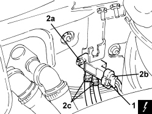

1080B82 PARTICULATE FILTER DIFFERENTIAL PRESSURE (D.P.F.) SENSOR - R R
- Path
- Procedures > 10 ENGINE > 1080 EMISSION CONTROL SYSTEM > 1080B EXHAUST EMISSION CONTROL SYSTEM > 1080B82 PARTICULATE FILTER DIFFERENTIAL PRESSURE (D.P.F.) SENSOR - R R
- Kind
- repair procedure (removal / refitting; the operation number is the code)
- Applies to
- engines: 1.9 JTD 8v, 1.9 JTD 16v, 2.4 JTD 20v; all production periods
- Interactive page
- https://sloeber94.github.io/elrnDB-fCrm/en/#/194002191
Applies to: engines: 1.9 JTD 8v, 1.9 JTD 16v, 2.4 JTD 20v; all production periods
 Removing
Removing
 Refitting
Refitting- Make sure that the ignition key is in the OFF position, then disconnect the battery terminal (-).
Description | Connector | |
|---|---|---|
- | Battery |
1. Disconnect the electrical connection from the particle filter differential pressure sensor.
Description | Connector | |
|---|---|---|
1 | FAP differential pressure sensor |
2. Undo the nut (2a), move the particle filter differential pressure sensor (2b) as necessary to disconnect the pipes (2c) and remove it.

Applies to: engines: 1.9 JTD 8v, 1.9 JTD 16v, 2.4 JTD 20v; all production periods
Refitting
Removing- Connect the pipes to the particle filter differential pressure sensor, then place it back in its housing and tighten the nut.
- Connect the electrical connection to the particle filter differential pressure sensor.
- Connect the negative battery terminal.